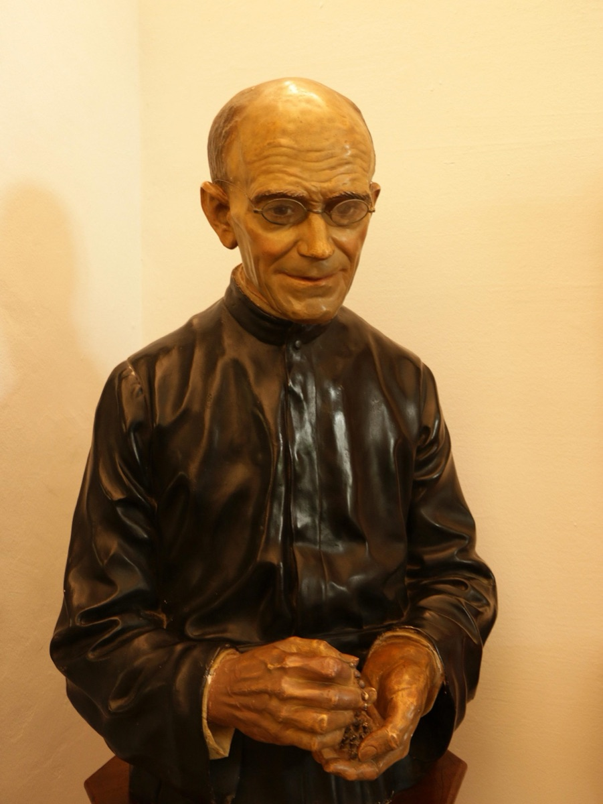

Isusovački blaženici
Brat laik · Vratar
Bl. Francisco Gárate
1857.–1929.
Francisco Gárate služio je učenicima kao bolničar i vratar. Jednostavan život, molitva i pažnja prema siromašnima obilježili su njegovo djelovanje u Bilbau.
Tekst je preveden i prilagođen uz pomoć umjetne inteligencije.

Izvor slike
- Spomendan
- 9. rujna
- Zaštitništvo
- Nije navedeno u izvoru
- Životni vijek
- 1857.–1929.
- Djelovanje
- Siromašni i isključeni · Bolesnici i umirući · Svakodnevni rad i skrovita služba
- Razdoblje
- 19., 20. stoljeće
- Datum smrti
- 9. rujna 1929.
U kalendaru zbirke koristi se dan smrti. Taj datum nije zasebna potvrda liturgijskoga spomendana.
Životopis
Francisco Gárate rođen je 3. veljače 1857. u skromnoj zemljoradničkoj obitelji blizu Azpeitije i Loyole. Bio je drugi od sedmero djece. S četrnaest godina otišao je raditi u isusovački kolegij Nuestra Señora de la Antigua u Orduñi. Redovnički je put započeo 1874. u Poyanneu u južnoj Francuskoj, gdje su prognani španjolski isusovci imali novicijat. Prve je zavjete položio 2. veljače 1876.
Od 1877. deset je godina služio u kolegiju Apóstol Santiago u La Guardiji. Kao bolničar njegovao je učenike, a brinuo se i za sakristiju. Posljednje zavjete položio je 15. kolovoza 1887. Sljedeće je godine došao u Bilbao i preuzeo vratarsku službu u Deustu. Ondje je ostao do smrti 9. rujna 1929.
Vrata visokoškolske ustanove bila su njegovo svakodnevno mjesto apostolata. Primao je ljude različitih društvenih prilika, prenosio poruke profesorima i pozivao učenike. Studentima je pružao ohrabrenje; potrebitima pribavljao hranu i odjeću. Skroman osobni život i ustrajna molitva pratili su taj neupadljivi rad. Bivši su učenici poslije svjedočili o pažnji s kojom ih je susretao. Sveučilište Deusto čuva uspomenu na njega kao na brata čija se svetost očitovala u desetljećima konkretne službe.
Tekst je preveden i prilagođen uz pomoć umjetne inteligencije.
Pročitaj više na izvornoj stranici ↗